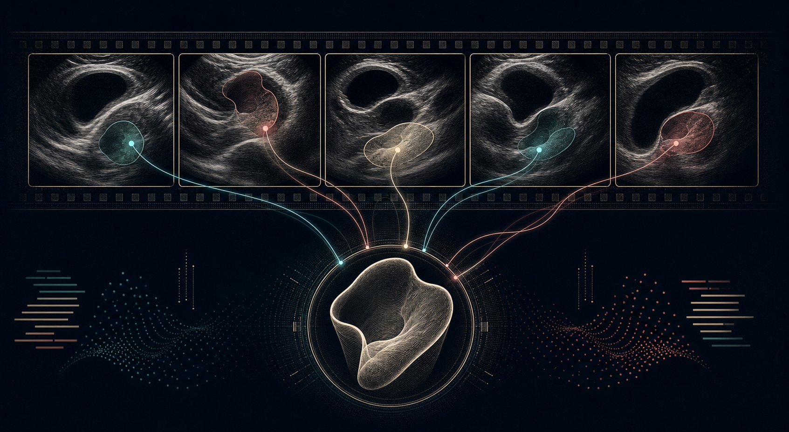
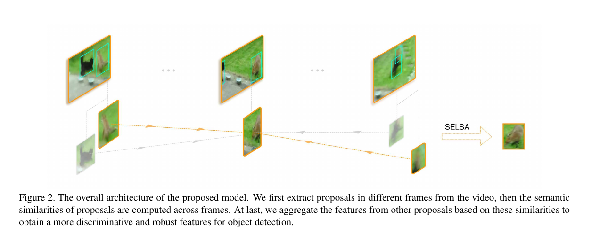
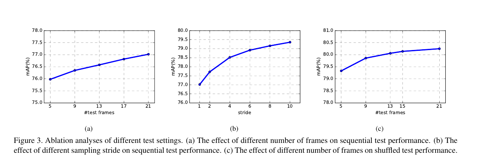

F frames, N proposals each
추론 frame과 같은 video에서 선택한 F개 frame을 사용합니다. 각 frame의 Faster R-CNN RPN이 N개의 object proposal feature를 냅니다.

Technical review · video representation
Sequence Level Semantics Aggregation
for Video Object Detection
흐린 한 프레임을 바로 판정하지 않고, 비디오 전체에서 의미적으로 닮은 관측을 찾아 특징을 보강하는 관점입니다.
One-minute read
비디오 검출에서는 빠른 움직임, 흐림, 가림 때문에 한 프레임의 모습만으로 물체를 신뢰성 있게 판정하기 어렵습니다. SELSA는 시간을 순서대로만 읽는 대신, 비디오 전 구간에서 현재 ROI와 의미적으로 유사한 ROI를 모아 특징을 업데이트합니다.
핵심은 “가까운 프레임”이 아니라 “닮은 관측”입니다. 그래서 단기 optical flow 정렬이 불안정한 장면에서도, 멀리 떨어져 있지만 선명한 관측이 현재 프레임을 보완할 수 있다는 문제 설정입니다.
Architecture · original figure

추론 frame과 같은 video에서 선택한 F개 frame을 사용합니다. 각 frame의 Faster R-CNN RPN이 N개의 object proposal feature를 냅니다.
reference xᵢᵏ와 candidate xⱼˡ의 affinity는 φ(xᵢᵏ)ᵀψ(xⱼˡ)입니다. φ와 ψ는 학습되는 변환으로, 단순 cosine을 고정해 쓰지 않습니다.
frame 안팎의 모든 candidate에 대해 affinity를 softmax로 정규화합니다. 따라서 유사한 proposal에 집중하면서 집계 feature의 스케일을 보존합니다.
가중합 feature를 기존 Faster R-CNN detection head에 보내 class와 box offset을 예측합니다. module 전체가 미분 가능하므로 SGD로 함께 최적화됩니다.
Mechanism in detail
SELSA는 tracking을 먼저 수행한 뒤 box를 연결하는 후처리기가 아닙니다. detector 내부의 proposal feature를 직접 보정하는 instance-level aggregation module입니다. 이 구분이 중요합니다. 테스트 시에는 정답 tracklet이 없으므로, proposal의 외형·범주 표현에서 얻는 affinity가 association을 대신합니다.
영상 전체를 순서 있는 장면 전개라기보다, 같은 객체 범주의 여러 “shot”이 섞인 집합으로 보는 것이 논문의 핵심 관점입니다. 품질이 낮은 shot은 비슷한 객체가 잘 보인 다른 shot의 feature를 빌려 intra-class variance를 줄입니다.
모든 proposal을 node, W를 edge weight로 두면 SELSA는 semantic similarity graph에서의 한 단계 message passing처럼 해석됩니다. 행 단위 정규화한 weight는 reference proposal이 다른 proposal로 이동할 확률처럼 작동합니다.
wᵢⱼᵏˡ = φ(xᵢᵏ)ᵀ ψ(xⱼˡ)선택된 frame index 집합 Ω의 모든 proposal을 대상으로 가중합합니다. 실제로는 잘못 연결된 proposal의 영향이 작아지도록 affinity가 학습되고, 유사한 범주·외형의 proposal은 큰 비중을 갖게 됩니다.
x̄ᵢᵏ = Σₗ∈Ω Σⱼ₌₁ᴺ softmax(wᵢⱼᵏˡ) · xⱼˡ저자들은 같은 class proposal이 조밀한 subgraph를 이뤄야 한다고 봅니다. 학습되는 affinity가 class 사이 transition을 줄이는 방향으로 작동하면, 엉뚱한 객체 feature가 섞일 위험이 낮아지고 class 내부 표현이 응집됩니다.
T = row-normalize(W)Evidence in the paper
전체 시퀀스에서 ROI feature를 집계하는 end-to-end detector입니다.
원 논문은 이 두 비의료 비디오 데이터셋에서 평가했습니다.
ResNeXt-101 backbone의 ImageNet VID 결과입니다. 의료 데이터의 성능 수치가 아닙니다.
순차 이웃보다 다양하게 표본화한 semantic neighbor가 도움이 된다는 분석을 제시합니다.

수치와 실험 범위는 ICCV 2019 원문을 요약했습니다. SELSA는 Seq-NMS 같은 후처리 없이도 전 시퀀스 정보를 feature 단계에서 반영하는 것을 목표로 합니다.
Proposed translation
태아 심장 초음파에서는 같은 구조도 탐촉자 각도, 심장 주기, 그림자와 dropout에 따라 선명도가 달라집니다. SELSA의 질문을 그대로 옮기면, “현재 프레임의 four-chamber view가 불분명할 때, 같은 clip 안의 더 신뢰도 높은 관측이 얼마나 도움을 주는가?”가 됩니다.
검사 단위 분할을 우선 보장하고, 각 frame 또는 cardiac-region token을 representation 단위로 둡니다.
단순 시간 거리 대신 view quality, anatomy visibility, phase, embedding similarity를 사용해 reference를 고릅니다.
frame score뿐 아니라 clip/patient 단위 점수와 근거 frame을 함께 산출해야 검증 가능성이 생깁니다.
Implementation review
프레임의 표준 view 분류인지, 구조 검출인지, clip/patient 단위 CHD screening인지 먼저 하나의 1차 endpoint로 고정합니다.
동일 patient·동일 clip의 frame만 허용할지, 다른 검사에서 온 prototype도 쓸지와 leakage 방지 규칙을 정합니다.
patient-level split, AUROC/AUPRC·sensitivity·specificity, quality subgroup, frame-to-clip aggregation을 사전에 기록합니다.